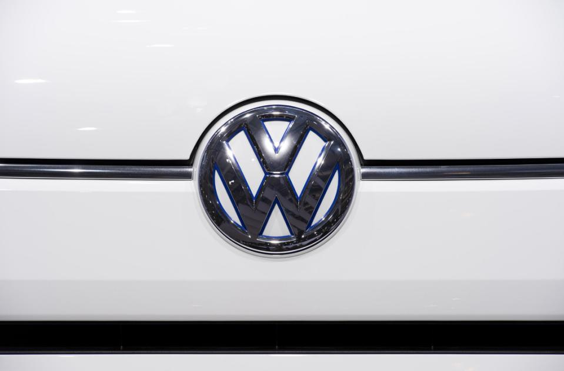

VW emissions-cheating scandal widens with new CO2 revelations
Germany's Volkswagen said Tuesday an internal probe had found that 800,000 more vehicles showed "inconsistencies" on carbon emissions, including the first petrol engines, as the auto giant sank deeper into a massive pollution cheating scandal.
The company said initial estimates suggested the latest revelation could cost it two billion euros ($2.2 billion), but "a reliable assessment of the scale of these irregularities is not yet possible."
Separately, Porsche SE, the investment company which owns 32.4 percent of VW's capital, said Tuesday's revelations could have a "negative impact" on its own results, although it maintained its projections for 2015.
Porsche's North American subsidiary announced it was suspending sales of its Cayenne diesel vehicles until further notice, but stressed that customers could continue to operate their crossover cars.
Among the engines affected are 1.4, 1.6 and 2.0 litre motors of VW, Skoda, Audi and Seat vehicles, said a VW spokesman, adding that these cars had been found to be releasing more of greenhouse gas CO2 than previous tests had shown.
At least one petrol (US: gasoline) engine is concerned, the company said. Up to now only its diesel engines had been concerned.
Volkswagen admitted in September that it had fitted 11 million of its diesel vehicles with devices designed to cheat official pollution tests, revelations that have sparked global outrage and investigations across the globe.
The so-called defeat devices turn on pollution controls when cars are undergoing tests and off when they are back on the road, allowing them to spew out harmful levels of nitrogen oxide.
The latest issue opens up another front in the scandal engulfing the company as it relates to a different type of engine and emissions.
It also comes a day after US authorities accused the carmaker of fitting the nitrogen oxide defeat devices also on its larger 3.0 litre diesel vehicles -- charges VW adamantly denied.
"I have pledged from the start that we will stop at nothing in clarifying the circumstances," chief executive Matthias Mueller said in a statement.
"We will stop at nothing. It is a painful process but we have no choice," he said.
"The Volkswagen executive board regrets the facts established," he said of the internal probe that uncovered CO2 irregularities, adding that the company will ensure that the correct emissions level are indicated following consultations with the authorities."
In the United States, authorities late Monday accused VW of fitting illegal "defeat devices" not only on its smaller engines, but also into various six-cylinder 3.0 litre diesel VW Touareg, Porsche Cayenne and Audis.
The inclusion of Porsche vehicles among those alleged to contain defeat devices could trip up Mueller, who was drafted in from the luxury sports car unit to replace Martin Winterkorn, who resigned at the height of the scandal.
"We have clear evidence of these additional violations," said Cynthia Giles, an official with the US EPA's Enforcement and Compliance Assurance office.
"VW has once again failed its obligation to comply with the law that protects clean air for all Americans."
Mueller did not address the latest US allegations in his statement Tuesday, as shares in Volkswagen fell 1.5 percent on the Frankfurt stock exchange.
VW, the world's number two carmaker by sales, had swiftly denied the new US charges.
"Volkswagen AG wishes to emphasize that no software has been installed in the 3-litre V6 diesel power units to alter emissions characteristics in a forbidden manner," it said in a statement.
"Volkswagen will cooperate fully with the EPA (to) clarify this matter in its entirety."
Porsche similarly denied the allegations, insisting that "all of our information was that the Porsche Cayenne Diesel is fully compliant."
Audi, another of VW's high-end brands, insisted that the software installed in its engines were "in line with the law."
It argued that the so-called Auxiliary Emission Control Devices (AECD) fitted into its engines were not designed to cheat pollution tests, but maximise the engine's performance under different driving conditions.
Carmakers were allowed to fit AECDs in cars in the United States as long as they kept the authorities informed once a year, a spokesman explained.
The scandal is turning into a veritable car crash for a company long seen an emblem of Germany's industrial might.
Volkswagen's finances have already been hurt.
Last week, the company booked its first quarterly loss in more than 15 years as it set aside 6.7 billion euros ($7.4 billion) to cover the initial costs of the scandal.
VW's sales in the United States have also been hit, as they have stalled in October while other major US automakers enjoyed double-digit gains in what was their best month since 2001.
The holding company Porsche SE is controlled by the Piech and Porsche families who inherited the Volkswagen empire built by Ferdinand Porsche.
In its statement, it maintained its projection of post-tax profits for 2015 of between 0.8 and 1.8 billion euros.